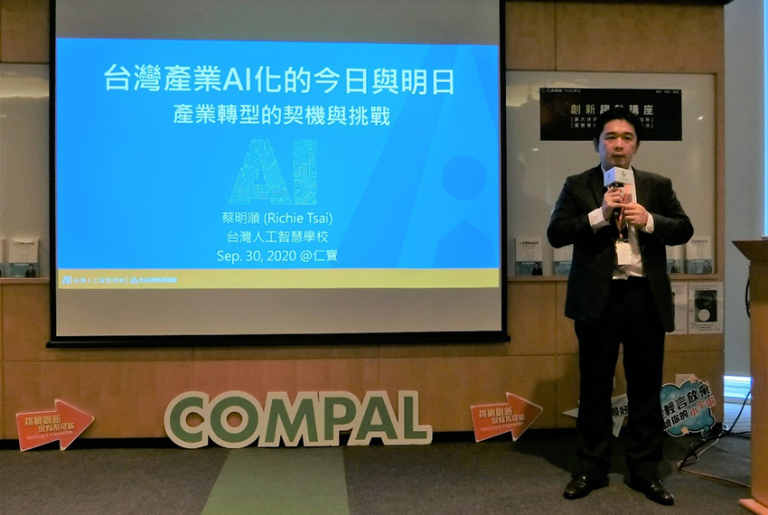

【創新趨勢講座_第7講】台灣產業AI化的今日與明日
│ Site HR
研發人力資源小組在09/30邀請到【台灣人工智慧學校】蔡明順代理執行長為同仁帶來了一場2小時的演講。並與現場主管分析人工智慧的衝擊與改變、產業AI化的應用案例、甚至分享其他台灣企業的產業AI發展現況，並在最後給予仁寶主管們關於AI發展及方向建議。
|  |
【創新趨勢講座】邀請產業趨勢專家與同仁分享市場、產品、技術趨勢。
本次講座於09月30日在台北仁寶大樓901會議室舉辦，在週三的上午與80位PCRD主管一起分析，因為過去台灣錯過太多科技革新，藉著AI即將崛起的機會，台灣擁有半導體的絕大優勢，也期許仁寶主管身為科技業的一員，能走在研發、市場最前端，提前佈局AI產業，搭上新型的產業變革。